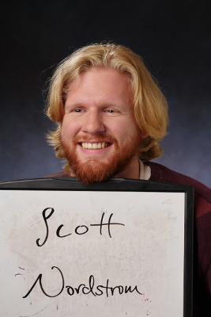

I am a PhD student in the Ecology and Evolutionary Biology Deartment at the University of Colorado, Boulder. I am advised by Brett Melbourne. I am also a student in the Interdisciplinary Quantitative Biology program and a former statistical collaborator with the Laboratory for Interdisciplinary Statistical Analysis.
I enjoy ecology, math, and statistics.
I mostly work with flowering plants.
My ecology interests include population dynamics and demography, pollination biology, life history, remote sensing, micro-evolution, and population genetics.
My math interests include networks, probability, stochastics, matrix algebra, and statistical modeling and analysis.
Read more about things I do here.